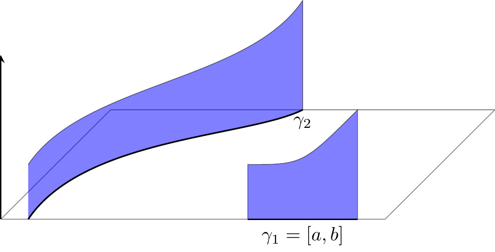
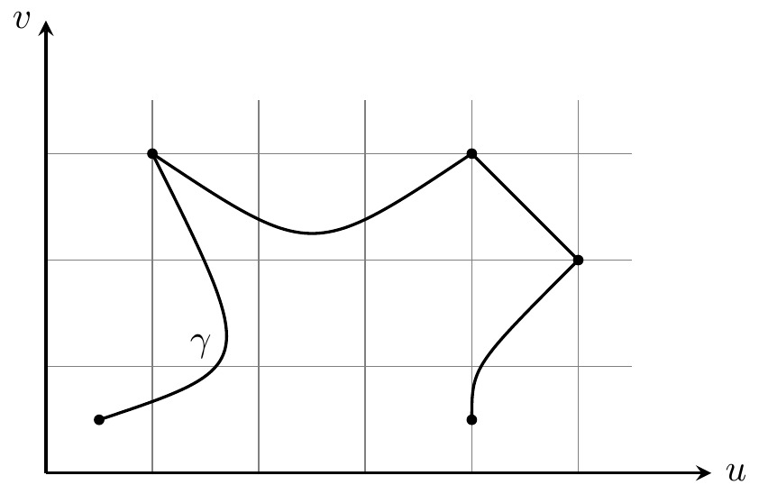
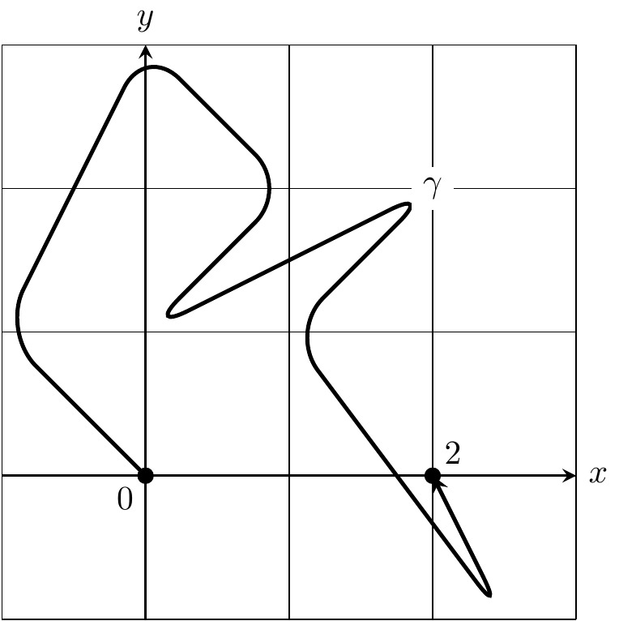
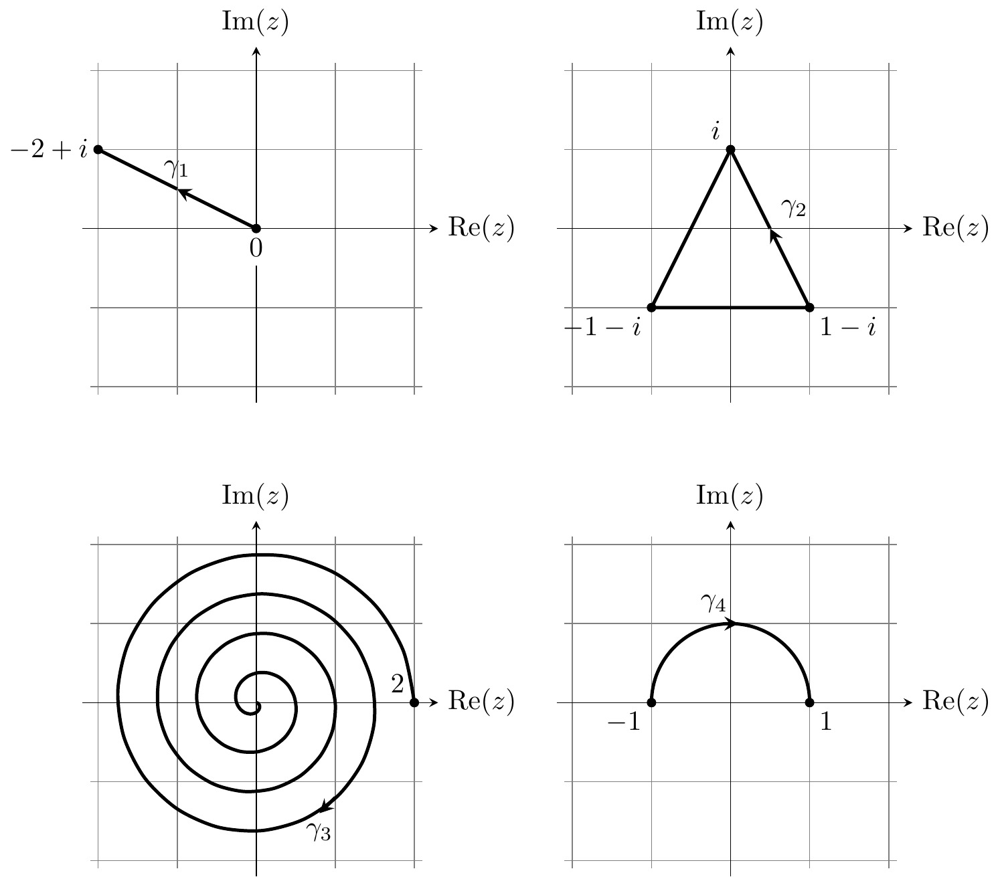

6 Contour integrals
In this section, we will generalize the integral \(\int_a^b f(x)dx\) from calculus in two ways. Firstly, we allow \(f=u+iv\) to be a complex function. Secondly, we will define the integral over more general curves \(\ga\) than intervals \([a,b]\subset\R.\)
Definition 6.1 Let \(f\colon[a,b]\to\C\) be a continuous complex-valued function on an interval with real and imaginary parts \(f=u+iv,\) \(u,v\colon[a,b]\to\R.\) Define
\[\int_a^b f(x)dx=\int_a^b u(x)dx+i\int_a^b v(x)dx. \tag{6.1}\]
Familiar rules for integrals (linearity, substitution) carry over to complex-valued functions, but the following estimate is more tricky to prove.
Proposition 6.1 \(\left|\int_a^b f(x)dx\right|\leqslant \int_a^b|f(x)|dx\)
Proof.
Pick a complex number \(0\neq c\in\C\) such that \(c\int_a^b f(x)dx\in\R.\) Then \[\begin{align*} |c|\left|\int_a^b f(x)dx\right|&=\left|c\int_a^b f(x)dx\right|\\ &=\left|\Re\int_a^b cf(x)dx\right|&&\text{as $c\int_a^b f(x)dx\in\R$}\\ &=\left|\int_a^b \Re(cf(x))dx\right|&& \\ &\leqslant\int_a^b|\Re(cf(x))|dx&&\text{from calculus}\\ &\leqslant\int_a^b|cf(x)|dx&&\\ &=|c|\int_a^b|f(x)|dx, \end{align*}\]
where the third line follows from Equation 6.1 and the fifth from Equation 1.8. The result follows by dividing by \(|c|\neq0\).
Definition 6.2 A curve (or path) in the plane is a continuous map \[[a,b]\overset{\ga}{\longra}\C\]
on a closed interval. Decompose \(\ga(t)=u(t)+iv(t)\) into real and imaginary parts. The curve \(\ga\) is differentiable if \(u,v\) are differentiable on \([a,b]\) (including one-sided derivatives at the endpoints), and the curve \(\ga\) is continuously differentiable (or C1) if the derivatives \(u'(t), v'(t)\) are continuous on \([a,b].\) The curve \(\ga\) is piecewise C1 if there exists a subdivision of the interval
\[a=t_0<t_1<\cdots<t_n=b \tag{6.2}\]
such that each of the restrictions \(\ga|_{[t_{k-1},t_k]},\) \(k=1,\ldots,n,\) is a continuously differentiable curve. In this case we call the subdivision admissible. For any admissible subdivision, the length of the curve \(\ga\) is
\[L(\ga)=\sum_{k=1}^n\int_{t_{k-1}}^{t_k} |\ga'(t)|dt. \tag{6.3}\]
We call \(\ga([a,b])\subset\C\) the image of the curve. When the image is contained in a subset \(D\subset\C,\) we say that \(\ga\) is a curve in D.
A curve is closed if \(\ga(a)=\ga(b),\) and then we call \(\ga(a)\) the base of the loop (or contour) \(\ga\).

Definition 6.3 Let \(f\colon D\to \C\) be a continuous complex function. Let \(\ga\) be a piecewise C1 curve in \(D.\) Pick an admissible subdivision Equation 6.2. The path integral (or contour integral if \(\ga\) is closed) of \(f\) over the curve \(\ga\) is
\[\int_\ga f(z)dz = \sum_{k=1}^n\int_{t_{k-1}}^{t_k} f(\ga(t))\ga'(t)dt. \tag{6.4}\]
Example 6.1
The curve \(\ga(t)=t\) parameterizes the interval \([a,b].\) In this case, Equation 6.4 reduces to the integral \(\int_a^bf(x)dx\) from Equation 6.1.
Example 6.2
Let \(\ga(t)=p\) be constant. Then \(\int_\ga f(z)dz=0\) for all \(f.\)
Example 6.3 (important)
Let \(f(z)=z^n,\) \(n\in\Z,\) and \(\ga(t)=e^{it},\) \(t\in[a,b].\) \[\int_\ga f(z)dz=\int_a^b e^{int}ie^{it}dt = \begin{cases} i(b-a)&\text{if $n=-1$},\\ \frac{ e^{i(n+1)b}-e^{i(n+1)a}}{n+1}& \text{if $n\neq-1$}. \end{cases}\]
In particular, for the boundary curve of the disk \(\ol D_r(z_0)\) defined by
\[[0,2\pi]\xrightarrow{\ga_{\6 D_r(z_0)}}\ol D_r(z_0), \ga_{\6 D_r(z_0)}(t) = z_0+re^{it}, \tag{6.5}\]
which we denote by \(\6D_r(z_0),\) we have
\[\int_{\6D_r(z_0)}(z-z_0)^n= \begin{cases} 2\pi i & \text{if $n=-1$},\\ 0 & \text{if $n\neq-1$}. \end{cases} \tag{6.6}\]
Lemma 6.1
- The integral Equation 6.4 and the length of a curve Equation 6.3 are independent of the choice of admissible subdivision.
- Let \(\varphi\colon [c,d]\to [a,b]\) be a strictly monotone increasing, continuously differentiable bijection. Let \(\ga\) be a piecewise C1 curve. Then \(\ga\circ\varphi\) is also a piecewise C1 curve and \[\int_{\ga\circ\varphi}f(z)dz = \int_\ga f(z)dz.\]Hence the curve integral is independent of the parameterization of \(\ga.\) Similarly, \(L(\ga\circ\varphi)=L(\ga)\) for the lengths.
Proof.
- Since every two admissible subdivisions have a common admissible subdivision, it suffices to prove that Equation 6.4 remains unchanged upon passing to a subdivision. Every subdivision is obtained by inductively inserting points, so it suffices to consider the case of a single insertion, say \(t_{k-1}<t_*<t_k.\) Then only one summand in Equation 6.4 changes, and our claim follows from \[\int_{t_{k-1}}^{t_k}f(\ga(t))\ga'(t)dt= \int_{t_{k-1}}^{t_*}f(\ga(t))\ga'(t)dt+\int_{t_*}^{t_k}f(\ga(t))\ga'(t)dt.\]
The same argument applies to the length of a curve.
As \(\varphi\) is bijective, there are unique \(s_k\in[c,d]\) with \(\varphi(s_k)=t_k\) for \(k=0,\ldots,n.\) Of course, \(s_0=c\) and \(s_n=d.\) The monotonicity implies that \(s_{k-1}<s_k\) for all \(k\) and that \(\varphi\) maps \([s_{k-1},s_k]\) bijectively onto \([t_{k-1},t_k].\) The subdivision \(c=s_0<s_1<\cdots<s_n=d\) is again admissible, since \(\ga\circ\varphi|_{[s_{k-1},s_k]}\) is continuously differentiable for all \(k\) by the chain rule.
Using the change of variables \(s=\varphi(t),\) we compute \[\begin{align*} \int_{\ga\circ\varphi}f(z)dz&=\sum_{k=1}^n\int_{s_{k-1}}^{s_k} f(\ga(\varphi(t)))\ga'(\varphi(t))\varphi'(t)dt\\ &=\sum_{k=1}^n\int_{t_{k-1}}^{t_k} f(\ga(s))\ga'(s)ds=\int_{\ga}f(z)dz. \end{align*}\]
Due to Lemma 6.1(b) we view curves differing only by a parametrization as equivalent. In particular, we may translate and scale the domain \([a,b].\)
Definition 6.4
- Let \([a,b]\xrightarrow{\ga_1}\C,\) \([b,c]\xrightarrow{\ga_2}\C.\) Assume \(\ga_1(b)=\ga_2(b).\) Then the concatenation of \(\ga_1\) with \(\ga_2\) is the curve\[[a,c]\xrightarrow{\ga_1\ast\ga_2}\C, (\ga_1\ast\ga_2)(t)= \begin{cases} \ga_1(t) & \text{if $t\in[a,b]$},\\ \ga_2(t) & \text{if $t\in[b,c]$}. \end{cases}\]
- The opposite of a curve \([a,b]\xrightarrow{\ga}\C\) is the curve\[[-b,-a]\xrightarrow{-\ga}\C, (-\ga)(t)=\ga(-t).\]
Proposition 6.2 Let \(f,g\colon D\to\C\) be continuous complex functions and let \([a,b]\xrightarrow{\ga} D\) be a piecewise C1 curve.
- The integral over a curve is linear: for all \(\la\in\C\) we have\[\int_\ga \la f(z)+g(z)dz=\la\int_\ga f(z)dz + \int_\ga g(z)dz.\]
- For the opposite curve,\[\int_{-\ga} f(z)dz=-\int_\ga f(z)dz.\]
- For the concatenation of curves,\[\int_{\ga_1\ast\ga_2} f(z)dz = \int_{\ga_1}f(z)dz + \int_{\ga_2}f(z)dz.\]
- Suppose that \(|f(z)|\leqslant M\) for all \(z\in\ga([a,b]).\) Then\[\left|\int_\ga f(z)dz\right|\leqslant M\cdot L(\ga). \tag{6.7}\]
Proof.
- follows from the linearity of the ordinary integral and b. is simply the change of variables \(s=-t\) in the integral. The argument for c. is the same as for Lemma 6.1(a). We prove d. for a trivial subdivision (\(n=1\)):
\[\begin{align*} \left|\int_\ga f(z)dz\right| &= \left|\int_a^b f(\ga(t))\ga'(t)dt\right|\\ &\leqslant \int_a^b |f(\ga(t))||\ga'(t)|dt&&\\ &\leqslant M\int_a^b|\ga'(t)|dt. \end{align*}\] where the second line follows from Proposition 6.1.
The general case is obtained by applying this to each subinterval \([t_{k-1},t_k]\) and then summing the resulting estimates over \(k.\)
Remark 6.2. There is a generalization of the path integral to curves \(\ga\) of bounded variation called the Riemann–Stieltjes integral. Proposition 6.2 continuous to hold with the length \(L(\ga)\) replaced by the total variation. For example, Lipschitz continuous maps are of bounded variation.
From Equation 6.7 we obtain:
Corollary 6.1 Let \((f_n)_{n\in\N}\) be a uniformly convergent sequence of complex functions on \(D.\) For every curve \(\ga\colon[a,b]\to D\) we have
\[\lim_{n\to\iy}\int_\ga f_n(z)dz=\int_\ga \lim_{n\to\iy}f_n(z)dz.\]
Proposition 6.3 (Complex FTC) Let \(f\) be a continuous complex function on an open set \(U\) and let \([a,b]\xrightarrow{\smash{\ga}}U\) be a piecewise C1 curve. Suppose \(F\) is a holomorphic function on \(U\) with \(F'=f\) (we call \(F\) a primitive of \(f\)). Then \[\int_\ga f(z)dz = F(\ga(b))-F(\ga(a)). \tag{6.8}\] In particular, for every closed curve\[\int_\ga f(z)dz=0. \tag{6.9}\]
Proof.
By the chain rule, \[\frac{d}{dt} F(\ga(t)) = f(\ga(t))\ga'(t).\]
Using the (ordinary) fundamental theorem of calculus to evaluate Equation 6.4 gives \[\int_\ga f(z)dz = \sum_{k=1}^n F(\ga(t_k)) - F(\ga(t_{k-1})) = F(\ga(t_n))-F(\ga(t_0)).\]
If \(F\) is holomorphic with \(F'=0\) and \(U\) is path-connected, see Definition 8.1(a) below, we recover from Equation 6.8 the familiar fact that \(F\) is a constant. Of course, this holds more generally for differentiable functions \(F.\)

Example 6.4
Since the entire function \(f(z)=az+b\) has the primitive \(\frac12 az^2+bz,\) we have \(\int_\ga (az+b)dz=0\) for every closed curve. More generally, Theorem 5.2 can be used to construct primitives for power series.
Remark 6.2. Conversely, every holomorphic function has a holomorphic primitive on a simply connected domain \(U\) (for example, a disk). This will be proven in Theorem 8.5.
Questions for further discussion
- Is there an analogue of Proposition 6.3 where \(F\) is only assumed to be real differentiable?
- Find the integral of a power series \(P=\sum_{n=0}^\iy a_nz^n\) with positive radius of convergence \(\rho>0\) along an arbitrary curve \(\ga\) in \(D_\rho(0)\)?
6.1 Exercises
Exercise 6.1
Recall from Example 4.6 that \(\log\colon\C^-\to\C\) is a holomorphic primitive of \(1/z\) on the slit plane \(\C^-.\) Combine Equation 6.9 and Example 6.3 to show that there is no holomorphic primitive of \(1/z\) on the punctured plane \(\C^\t.\)
Exercise 6.1
For the curves \(\ga_k,\) \(k=1,2,3,4,\) as in the following sketch

- find piecewise C1 parameterisations \(\ga_k\colon [a,b]\to\C,\)
- compute the length \(L(\ga_k)\) (\(\ga_3\) may be omitted)
- evaluate \(\int_{\ga_k} z^2dz.\)
Exercise 6.2
Define \(\ga_\ep\colon [-\pi+\ep,\pi-\ep]\to\C,\) \(\ga_\ep(t)=e^{it}\) for \(0<\ep<\pi.\) Compute \[\lim_{\ep\to0}\int_{\ga_\ep}z^{1/2}dz,\] where the square root \(z^{1/2}=\exp(\log(z)/2)\) is defined as on Sheet 5 using the principal branch of the logarithm.
(Aside: \(z^{1/2}\) is integrable in the sense of measure theory and using the more general integral defined there we can rewrite the above integral as \(\int_{\partial D_1(0)}z^{1/2}dz.\))
Exercise 6.3
Let \(\ga\) be the straight line from \(z=1\) to \(z=i.\) Let \(f(z)=1/z^4.\) Determine the maximum of \(|f(z)|\) over all \(z\in\Im(\ga).\) Use this to estimate \[\left|\int_\ga f(z)dz\right|\leqslant 4\sqrt{2}.\]
Then compute \(\int_\ga f(z)dz\) directly and compare this to the estimate.
Exercise 6.4
Let \(f(z)\colon\partial D_r(0)\to\C\) be a continuous function. Show that \[\overline{\int_{\partial D_r(z_0)}f(z)dz}=-r^2\int_{\partial D_r(z_0)}\overline{f(z)}(z-z_0)^{-2}dz.\]
Exercise 6.5
Let \(D_1, D_2\subset\C\) be closed subsets and \(f\colon D_1\cup D_2\to\C\) be continuous. Suppose that \(\int_{\ga_1} f(z)dz=0\) for every closed curve \(\ga_1\) in \(D_1\) and that \(\int_{\ga_2} f(z)dz=0\) for every closed curve \(\ga_2\) in \(D_2.\) Show that if \(D_1\cap D_2\) is path-connected, then \(\int_\ga f(z)dz=0\) for every closed curved \(\ga\colon[a,b]\to D_1\cup D_2.\)
Hint: Subdivide \([a,b]\) into subintervals \([t_{k-1},t_k]\) which map under \(\ga\) entirely to \(D_1\) or entirely to \(D_2.\)